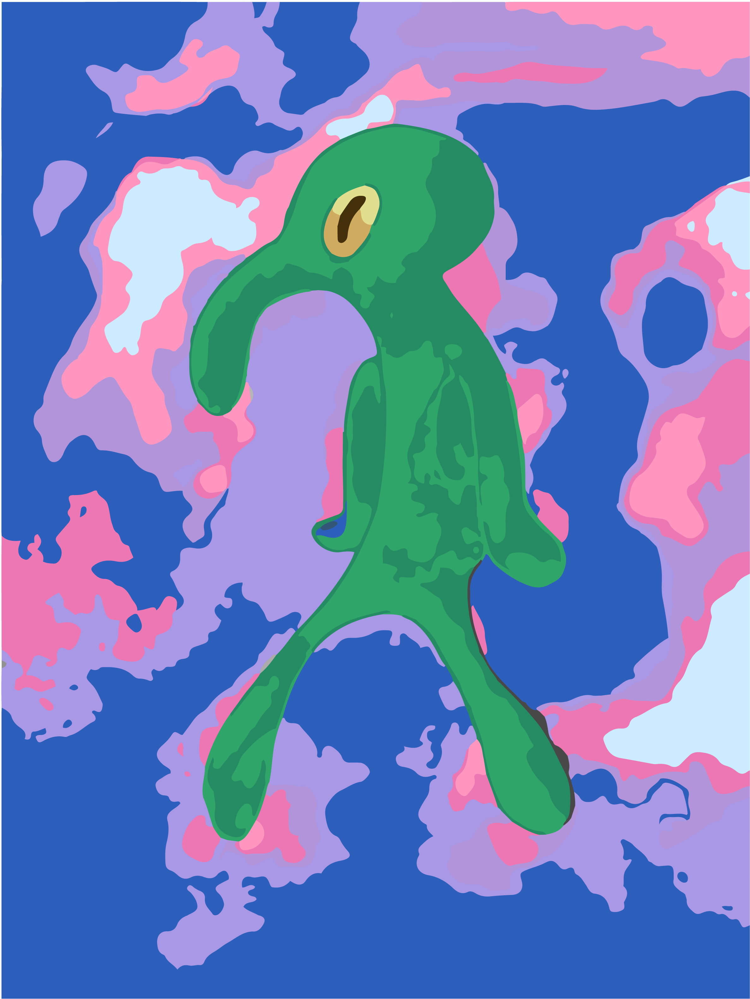
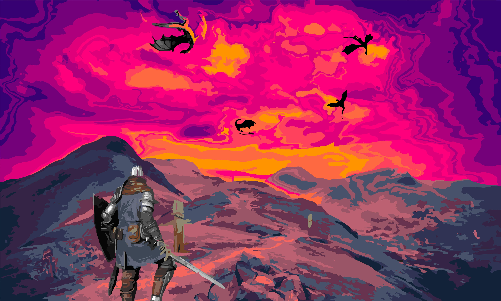
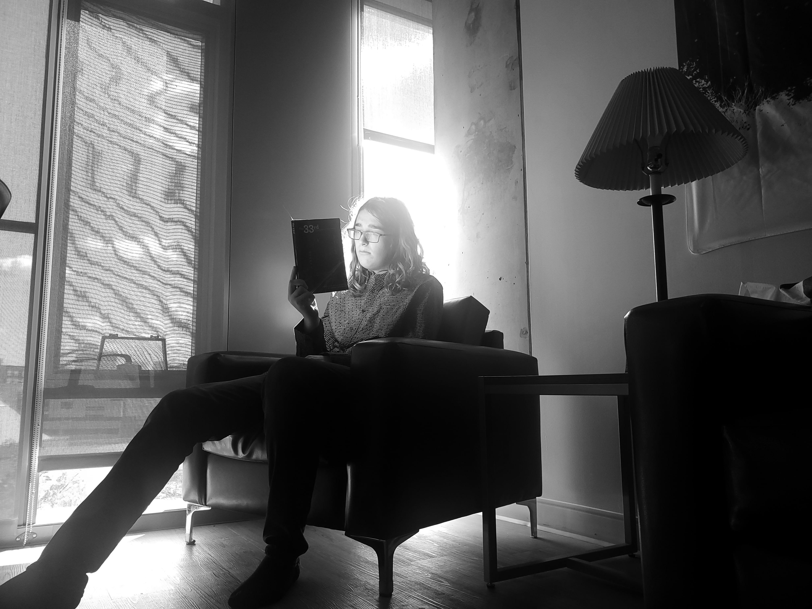
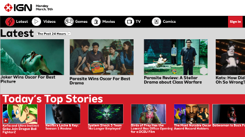
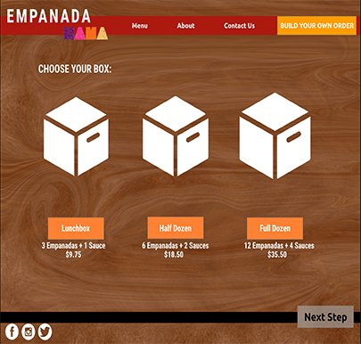

Bold and Brash Recolor
From the knowledge of Design 2 I made an image with Adobe Illustration in a recreated image.


Design 2 Course Final
For this piece, I needed to replace all the colors from the original landscaped image in Adobe Illustrator, and add other images in to make a final vastly different from the original jpeg.
Vector Tracing Project
in this project, I made several hundreds of objects from different layers using only the grayscale colors to recreate a scene from a movie, and I chose the scene of the joker going down the stairs.


Grayscale Photograph
For this photo, I angled my camera with a nearby decorative pumpkin to aquire this photo. The light reflecting upon the book unto the face is exactly what I wanted from a photo.
IGN Redesign
I remade the popular gaming news outlet of IGN with a combination of Sketch and Flinto to make exploring the website something insteresting instead of users quickly looking for the next review, then leaving the site.


Empanada Mama Redesign
I made a new design specifically for a Empanada resturant near my hometown with Adobe XD, since it was too crowded, and since most orders were online, I wanted to make a step by step online order.